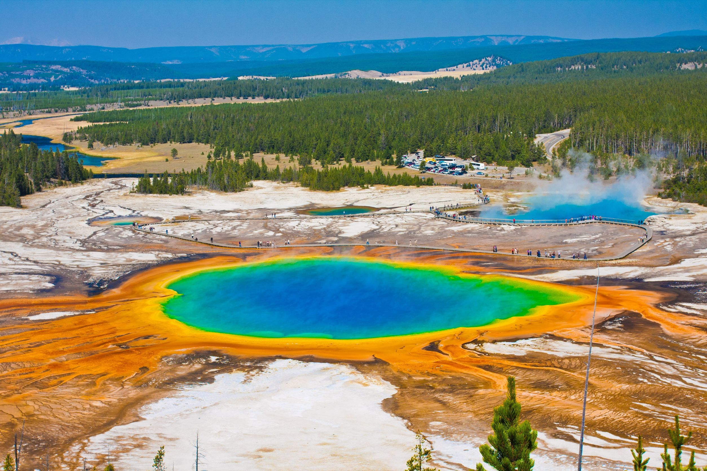

黃石國家公園
黃石國家公園（簡稱黃石公園，英語：Yellowstone National Park）是美國第一個國家公園。主要位於懷俄明州，部分位於蒙大拿州和愛達荷州，於1872年
3月1日美國總統格蘭特簽署國會通過的法案後建立，是世界上第一座國家公園。黃石公園以其豐富的野生動物種類和地熱資源聞名，老忠實間歇泉更是其中最
富盛名的景點之一。公園中有著多種類型的生態系統，其中以亞高山帶森林為主。
美洲原住民已經在黃石公園地區生活了至少1萬1千年，19世紀早期的劉易斯與克拉克遠征也繞過了這一區域。對該地區的有組織的勘探活動直到1860年代末才開
始出現，此前只有一些選擇在野外捕獵和居住的山地人在19世紀早期到中葉曾偶爾進入。美國陸軍在公園剛剛建立後就受委託對其進行監管。1917年後，公園的
管理工作移交給了之前一年剛剛成立的美國國家公園管理局。園中有數以百計因其建築學和歷史學意義而保護起來的建築物，研究人員已經發現了超過1000個考
古遺蹟。
歷史事件
黃石公園因位於黃石河的源頭而得名。18世紀末，一群法裔加拿大的捕獵人將這條河命名為「Roche Jaune」（法語，意為「黃色的岩石」），這可能是翻譯
希達察人對這條河的稱呼「Mi tsi a-da-zi」。之後，美國的捕獵人又將之翻譯為英語「Yellow Stone」。儘管美洲原住民的命名來源至今仍然沒有定論，
人們還是普遍認為這是因為黃石大峽谷黃色的石頭
地質
黃石火山是北美最大的火山系統，並且由於其異常龐大的爆發力度而被稱為「超級火山」。目前的陷落火山口是在至今約64萬年前的一次災難性的噴發中形成的
，這次噴發釋發了1000立方公里的火山灰、岩石和其它碎屑，其威力是1980年聖海倫火山爆發的1000倍。並產生了一個近1公里深，面積達72公里×45公里，
沉積了大量石灰岩的陷落火山口。該火山已知最猛烈的一次爆發發生在210萬年前，一共噴出了約2450立方公里的火山物質，並且創造出了帕克島火山口。
此外火山還於130萬年前有過一次較小規模的爆發，噴出了280立方公里的火山物質並形成了亨利福克火山口。這三次爆發都釋放了大量的火山灰覆蓋了北美洲
中部方圓數百英里的地區。大量的火山灰和有毒氣體釋放到大氣中可能會對全世界的氣象型態造成重大的影響並導致以北美地區為主一些生物種類的絕滅